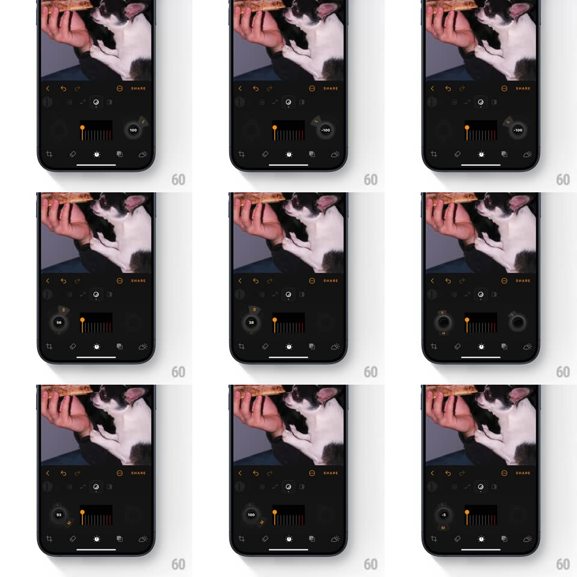

Media
Frame-by-frame

Rebuild this interaction 1:1: Luminar's details knobs - a row of rotary knobs (Small / Medium / Large details) that spring-expand when selected, revealing a value readout (e.g. -100..100) beside a mini bar-meter, then contract back with the same springy physics when another knob takes focus.

Rebuild this interaction 1:1: Luminar's details knobs - a row of rotary knobs (Small / Medium / Large details) that spring-expand when selected, revealing a value readout (e.g. -100..100) beside a mini bar-meter, then contract back with the same springy physics when another knob takes focus. ## Integration Integration: stack-agnostic spec - springs given as stiffness/damping, timed motions as duration + curve; map every value to your framework and animation library of choice. ## Scene Dark photo editor: cat photo above; below, a horizontal arrangement of circular knobs flanking a central mini bar-meter with an amber indicator line. The active knob is enlarged with its numeric value in a small bubble. ## Motion spec Pattern: focus-expanding knob cluster. - Tap a knob: it expands (scale 1 -> 1.35, spring ~320/18, overshoot wobble ~500ms) and its value bubble pops in beside it (scale 0.6 -> 1, spring ~360/20, 250ms); the previously active knob contracts on the same spring. - Drag on the active knob (vertical or rotary): the amber marker in the central bar-meter sweeps (1:1 mapping, -100..100), the value bubble's digits roll as they change (150ms slide), and the knob's indicator dot orbits its rim. - The knob wobbles on release (spring ~300/16, two visible oscillations). - Inactive knobs sit dim at rest scale; the bar-meter is shared - it always shows the active knob's value. ## Calibration - Expand and contract use the same under-damped spring - the cluster feels like connected physical objects. - The value bubble anchors to the knob's outer edge and follows it if the knob's position shifts. ## Reduced motion Knob focus changes with a 150ms scale crossfade; no wobble. ## Don't miss - The central bar-meter's amber line is shared state - it re-targets instantly when focus changes, never showing two values. - Negative values tint the readout subtly cooler; positive warmer - the sign is readable at a glance.